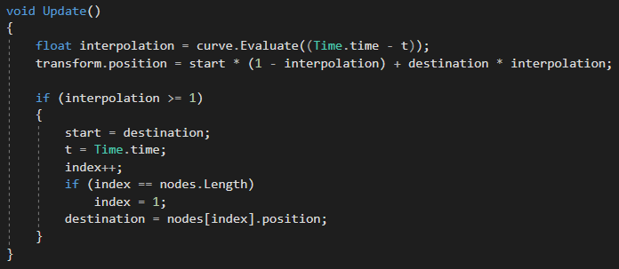
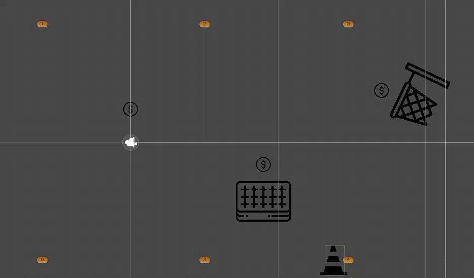
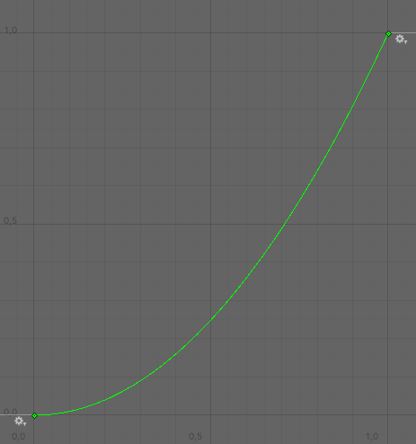
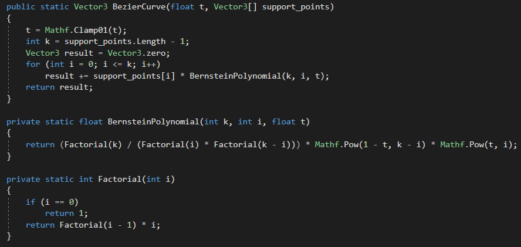
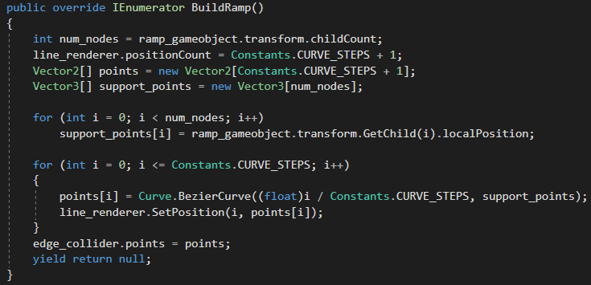

Teoria
Introduzione
Le rampe curve che il giocatore può definire nel gioco sono le seguenti:
Essendo il gioco 2D, tutte le curve sopracitate sono curve piane, ovvero, curve il cui poligono di controllo giace su un piano; questo significa che hanno torsione pari a 0.In questa pagina vengono trattate le rampe curve, sia dal punto di vista matematico, sia dal punto di vista implementativo.
Le rampe curve create nel gioco sono discretizzate in 20 segmenti connessi tra loro, lungo i punti ottenuti tramite le definizioni matematiche. Oltre alle rampe curve ci sono anche le rampe segmentate che, essendo di semplice costruzione non sono trattate in questa pagina.
Il progetto è stato sviluppato tramite il game engine di Unity.
Interpolazione
Nel gioco sono presenti degli ostacoli che si muovono secondo dei percorsi prestabiliti; per spiegare come questi oggetti si muovono, consideriamo un ostacolo mobile a cui viene associato il percorso di punti
\({P_0, P_{1} ... P_N}\).
Gli ostacoli nel gioco si muovono per interpolazione tra coppie di punti del percorso assegnatogli.
La prima coppia di punti considerata nell'esempio è \(P_0, P_1\); partendo da \(P_0\), prima o poi, a seconda della curva che utilizzano per l'interpolazione,
l'ostacolo raggiunge il punto \(P_1\) del percorso; in quel momento, questo cambierà la coppia di punti utilizzati in \(P_1, P_2\), riprendendo l'interpolazione da 0.
Questo processo continua, finché non raggiunge il punto finale del percorso \(P_N\); a quel punto, l'ostacolo riparte con coppia \(P_0, P_1\).
Tutti gli ostacoli si muovono seguendo questa logica, usando percorsi diversi e curve diverse.
A seguito il codice usato per la gestione del movimenti e una piccola dimostrazione del risultato.


L'ostacolo che si muove nella gif sopra, si muove usando la curva sottostante, sul percorso definito dai punti arancioni.

Curve di Beziér
Una curva di Beziér è una curva parametrica polinomiale definita sull'intervallo chiuso \([0, 1]\); per costruire
una curva di Beziér, bisogna definire \(N\) punti che andranno a costituire il suo poligono di controllo.
\(N\) punti di controllo definiscono il grado della curva \(N-1\); come già detto nel manuale, per ogni curva il giocatore può
usare al massimo 7 punti; questo vuol dire che il grado massimo delle curve di Beziér utilizzate sarà 6.
Le curve di Beziér prodotte dal giocatore sono costruite tramite i polinomi di Bernstein.
Algoritmo dei polinomi di Bernstein
Questo algoritmo descrive una curva di Beziér tramite i polinomi di Bernstein, definiti come segue:
\(P(t) = \sum_{i = 0}^{k} B_i^k(t) * P_i\)
\(B_i^k(t) = \frac{k!}{i!*(k-i)!} * (1-t)^{k-i} * t^i\)
Spieghiamo ora i vari indici di questa definizione:
- \(P(t)\): è il punto che vogliamo valutare della curva in corrispondenza del parametro \(t \in [0, 1]\)
- \(k\): è il grado della curva
- \(P_i\): è l'iesimo punto del poligono di controllo
- \(B_i^k(t)\): è il polinomio di Bernstein valutato nel parametro \(t\) considerando grado \(k\) e indice \(i\)
Scorrendo il parametro \(t\) è quindi possibile definire la curva di Beziér di grado \(k\), che parte dal punto iniziale e
termina nel punto finale.
L'implementazione dell'algoritmo di Bernstein utilizzata è la seguente:

Mentre il codice nell'immagine di sotto, mostra come effettivamente la rampa viene costruita nel gioco.
I punti del poligono di controllo sono definiti dalle posizioni in coordinate locali, rispetto alla trasformazione della curva; questa operazione è svolta dal primo ciclo.
Nel secondo ciclo invece, la curva viene discretizzata in 21 punti che vengono prima utilizzati dal LineRenderer(per disegnarla), poi dall'EdgeCollider(per descriverla al motore fisico).
Il codice qui mostrato è molto simile a quello usato nelle altre curve: l'unica cosa che cambia sono le definizioni matematiche usate.

Queste curve nonostante siano semplici da definire e costruire, soffrono di 2 grossi problemi:
- Nessun controllo locale: ogni volta che modifichiamo una curva di Beziér esistente, cambiamo tutta la curva.
-
Non adatte per la costruzione di curve lunghe: come sappiamo dalla teoria, il grado di una curva di Beziér dipende dal numero di punti;
questo implica, che più punti utilizziamo per la curva, più la sua valutazione e modifica diventa più onerosa.
Spline cubiche di Hermite
Una spline cubica di Hermite è una curva composta da curve di Beziér di grado 3, incollate
lungo i punti del poligono di controllo e parametrizzate sul medesimo intervallo \([0, 1]\).
Le varie curve di Beziér che compongono queste spline, vengono chiamate cubiche di Hermite e si costruiscono in modo differente, rispetto alle curve di Beziér di grado 3.
Per costruire una cubica di Hermite bisogna specificare 2 punti e 2 vettori:
- \(Q_0\): il punto iniziale della cubica
- \(Q_1\): il punto finale della cubica
- \(\vec{m_0}\): il vettore tangente nel punto iniziale della cubica
- \(\vec{m_1}\): il vettore tangente nel punto finale della cubica
\begin{cases} P_0 = Q_0 \\ P_1 = Q_0+\vec{m_0}*1/3 \\ P_2 = Q_1-\vec{m_1}*1/3 \\ P_3 = Q_1 \end{cases}
Le spline cubiche di Hermite che si possono costruire nel gioco, possono avere al massimo 7 punti.
Passiamo quindi alla definizione dei polinomi di Hermite, che si valutano sfruttando ancora i polinomi di Bernstein:
\(H_0^3(t) = B_0^3(t)+B_1^3(t)\)
\(H_1^3(t) = \frac{1}{3}*B_1^3(t)\)
\(H_2^3(t) = -\frac{1}{3}*B_2^3(t)\)
\(H_3^3(t) = B_2^3(t)+B_3^3(t)\)
\(P(t) = H_0^3(t)*Q_0+H_1^3(t)*Q_1+H_2^3(t)*Q_2+H_3^3(t)*Q_3\)
Passiamo ora alla definizione di queste curva da codice:
 Il modulo dei vettori tangenti associati a ciascun punto è costante(6).
Il modulo dei vettori tangenti associati a ciascun punto è costante(6).
 Questo tipo di spline, sono preferite rispetto alle classiche curve di Beziér, perché non soffrono dei problemi precedentemente citati, permettendo inoltre di porre delle vincoli posizionali e direzionali
alla spline finale.
Questo tipo di spline, sono preferite rispetto alle classiche curve di Beziér, perché non soffrono dei problemi precedentemente citati, permettendo inoltre di porre delle vincoli posizionali e direzionali
alla spline finale.
B-Spline
Le curve b-spline come le spline cubiche di Hermite sono curve composte da curve di Beziér opportunamente incollate; a differenza
delle cubiche di Hermite, non passano nei punti identificati dal poligono di controllo, ma li approssimano.
Il dominio di queste curve diversamente da quelle che abbiamo visto fin'ora, non è necessariamente \([0, 1]\).
Esistono 3 tipi di b-spline:
- b-spline uniformi: sono b-spline parametrizzate su intervalli della stessa ampiezza
- b-spline non uniformi: b-spline parametrizzate su intervalli di ampiezza diversa
- b-spline non uniformi razionali: chiamate anche "nurbs", definite come rapporto di curve polinomiali.
Il numero di curve incollate dipende dal numero di punti del poligono di controllo: supponiamo di avere la seguente sequenza di punti \(P_1, P_2 ... P_N\).
Con \(N\) punti del poligono di controllo, si incollano \(N-3\) curve di Beziér cubiche (se \(N \gt 4\)).
Nel caso in cui, il giocatore fornisca un numero di punti \(N\le 4\) per la costruzione della b-spline, l'applicazione genererà una curva di Beziér di grado \(N-1\).
La parametrizzazione degli elementi di una b-spline sfrutta un vettore di valori crescenti, chiamato vettore nodi; ciascuna coppia di valori nodali \(t_i\) e \(t_{i+1}\) sono i parametri di interpolazione, utilizzati da una certa curva che compone la b-spline.
I valori contenuti in questo vettore possono essere ripetuti, alterando la continuità della curva che si andrà a costruire.
In particolare, ripetendo un valore nodale tante volte quante il grado \(K\) delle curve di Beziér usate, forzerà la curva a passare per il punto associato a quel nodo; nel progetto infatti, i valori nodali iniziali e finali sono ripetuti 3 volte, per forzare le curve a passare per il punto iniziale e finale.
Il tipo di incollamento di queste curve dipende da due elementi: la molteplicità del valore nodale in un certo nodo e il grado delle curve di Beziér incollate; dato quindi un nodo con molteplicità \(P\) e curve di grado \(K\), il tipo di incollamento presso quel nodo è di tipo \(C^{K-P}\).
In altre parole, ei punti iniziali e finali le curve sono continue ma non derivabili (\(C_0\)), mentre gli incollamenti interni sono tutti \(C2\) (supponendo che non ci siano nodi interni ripetuti).
Deve inoltre valere una condizione tra il numero dei nodi \(M\), il grado delle curve di Beziér \(K\) e il numero di punti del poligono di controllo \(N\): \(M=N+K+1\).
Un'ultima proprietà particolare di questi oggetti è relativa al grado delle curve di Beziér utilizzate: più il grado è basso, più la b-spline ottenuta approssima meglio il poligono di controllo fornito.
Fatte queste premesse, passiamo alla descrizione di queste curve tramite l'algoritmo di DeBoor-Cox.
Algoritmo di DeBoor-Cox
Questo algoritmo definisce un punto della b-spline come somma dei punti del poligono di controllo, moltiplicati per funzioni base:
\(P(t) = \sum_{i = 0}^{n-1} B_{i, k}(t) * P_i\)
Spieghiamo i termini e gli indici e termini che compaiono nella sommatoria appena scritta:
- \(P_i\): sono i punti del poligono di controllo
- \(B_{i, k}(t)\): è una funzione base di \(i\) e \(k\) valutata su \(t\).
- \(n\): è il numero di punti del poligono di controllo
- \(k\): è il grado della b-spline(3)
I polinomi \(B_{i, k}(t)\) sono polinomi ricorsivi di DeBoor:
\(B_{i, 1}=\begin{cases}
0 \text{ se } t_i \le t \lt t_{i+1}\\
1 \text{ altrimenti}
\end{cases}\)
\(B_{i, k}=\frac{t-t_i}{t_{i+k-1}-t_i}*B_{i, k-1}(t) + \frac{t_{i+k}-t}{t_{i+k}-t_{i+1}}*B_{i+1, k-1}(t)\)
Questa definizione produce molte volte \(\frac{0}{0}\) che vengono gestiti come fattori 0.
A seguito il codice che implementa il tutto.
 Questo è il codice che sfrutta la definizione matematica, per costruire la rampa nel gioco.
Questo è il codice che sfrutta la definizione matematica, per costruire la rampa nel gioco.
Come si può vedere, nel caso in cui il numero di punti sia minore o uguale a 4, la curva prodotta è una normale curva di Beziér; in tutti gli altri casi,
la b-spline è costruita.
I vettori dei nodi sono vettori costanti sifatti:
- KNOTS_5 = [0, 0, 0, 0, 1, 2, 2, 2, 2]
- KNOTS_6 = [0, 0, 0, 0, 1, 2, 3, 3, 3, 3]
- KNOTS_7 = [0, 0, 0, 0, 1, 2, 3, 4, 4, 4, 4]